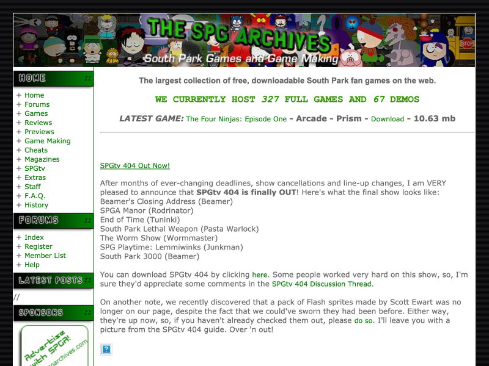
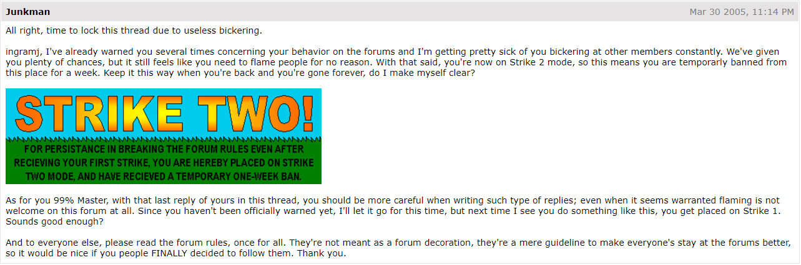
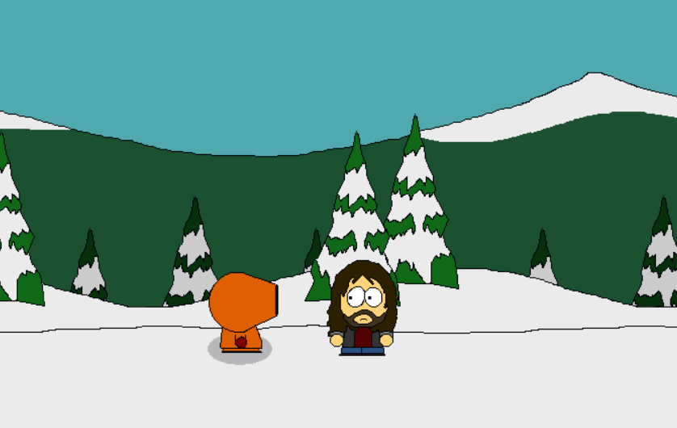
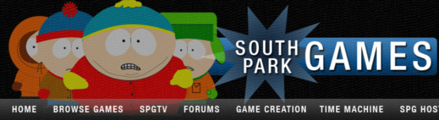
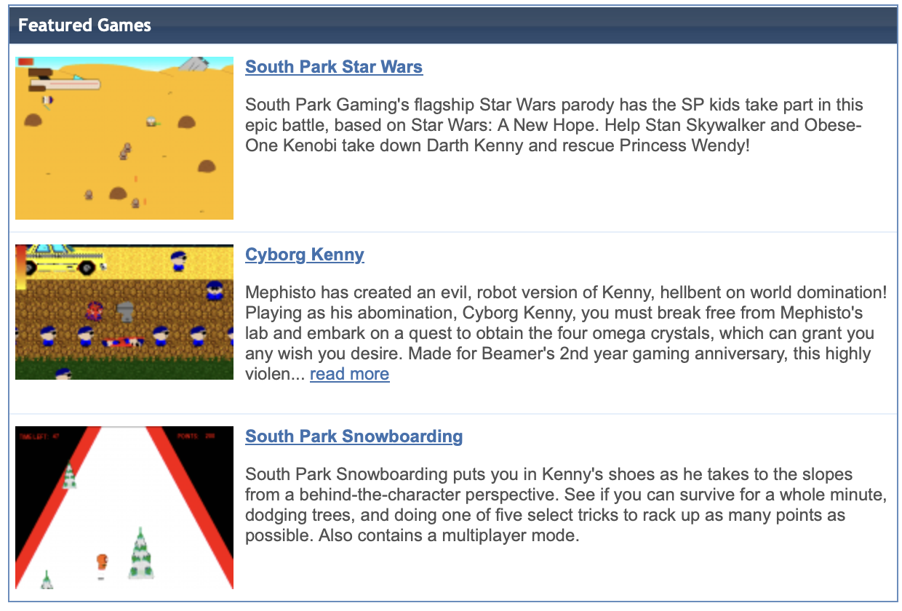
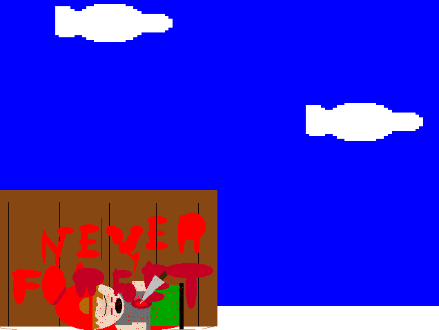

Humble Beginnings
Originally, "South Park Gaming" was conceived in 1999, roughly 2 years after the titular show aired on TV for the first time. The concept was basically just fan-made games based loosely on the characters of the show. Most were made in Clickteam/Europress Software game creation programmes; (It's spelled programs, you British twat) at first, simply with primitive program, "Klik 'n' Play", which due to being the first of its time, lacked features that would become staples in later development programmes, such as scrolling, application protection, etc.

At this time, it would simply be quantity over quality, with creators such as Matt Crosta, Matt Kennedy, and Joe "Polygon" Dixon. The games in question, apart from being South Park tributes, were usually simple 2D platformers, shoot 'em ups, with music in the form of MIDI versions of songs from sources like Final Fantasy, Doom, Nirvana, Chrono Trigger, Castlevania and countless others.
Into the Millenium
Although as aforementioned, some favoured quantity over quality, there were exceptions; Polygon, for example, made a great name for himself creating "SP Super Mario Bros 1 & 2" and "SP Arcade". Matt Kennedy also became famous for his shoot'em up game "Kenny's Rampage" in 2000. 2000 was also the year when the SPGaming started to develop into a proper community, with big names like Steven "Stanster" Trinkl, Maxime "Junkman" Tondreau and Matt "Beamer" Gandhee.
These three, and others would become the main contributors to the trend and community, with both quality AND quantity flowing through their contributions. Not only this, but the software that Clickteam would release for game development was evolving rapidly fron Klik 'n' Play, from Click & Create, to The Games Factory to Multimedia Fusion! (And even that's far from the newest or most advanced program in this day and age)
In 2001, the bond between the community seemed to dwindle a little, so one SPGamer from UK, named Lee Ashcroft birthed a revolutionary concept that would greatly add to the community aspect of SPG: SPGtv (South Park Gaming Television). SPGtv was basically a group of "shows", created with the same software as games, based around not only the SP characters, but also SP caracatures of the SPG community. The types of shows varied widely, with things like "Parkzai", a SP parody of Bonzai, "Fatass", a SP parody of Jackass, most acclaimed of all, Beamer's lewd depiction of futuristic SP life, "South Park 3000", and even some acclaimed one-off shows, such as Junkman's "AOL vs Lee". (AOL has always been mocked and reviled for being a poor ISP).
Spratt Takes Over
In 2003, the community officially had itself a place to crash and socialize/contribute/build up a fanbase, in the form of a forum created by "Spratt_", which would later evolve to be the South Park Gaming Archives you now see before you. The games meanwhile, were archived on "Smileytown Arcade", ran predominantly by Junkman, and this is where all known SPGs at the time could be found, thus providing the backdrop for fans of freeware games and/or SP to find their all you can play buffet.
late 2004, however, Smileytown Arcade closed its doors, as the SPGA merged its archive with the forums as one, allowing all things SPG related (including SPGtv, which went dead for a period in 2002) to be found in one domain.

As explained by South-Park-Games.com, the South Park gaming archives were started in early 2002 by Spratt. After community members did not take the effort to provide suitable content to sustain SPGamesX.Com, Spratt decided to take a stab at what the SPG Directory and SPGamesX.Com tried before him. The site was to focus on the huge amount of games that people have created over the years and to prevent the loss of the games. In the beginning there was very fast updates and reviews as many people jumped on the bandwagon. The South Park Gaming Archive attempted to expand it's website (with features like SPGA TopSites), however those ideas never really caught on and fell by the wayside.
After SPGamesX went down, the site (SPGArchives.com) and it's forum became the main hub for South Park gamers. This was great for the community as they had a way to communicate with each other and socialize still, but it was bad for the site owner as Spratt will admit, he didn't pay much attention to the site or update it that often anymore. During this time of non-updates, the forums (and main community hub) went down hard leading to Beamer, Junkman, and Stanster opening up a site for their personal games (most likely under the assumption that SPGArchives.com was just going to be closed or not dealt with).
During the time that Beamer and the gang migrated off the site, Spratt attempted to do some edits to SPGArchives.com including trying to bring the forums back (which went back down about a week later).Spratt then talked to some of the Smiley Town Arcade ("STA") members and almost decided to close down SPGArchives.com, but at the last second changed his mind. Spratt decided he was going to redesign SPGArchives.com and re-open it's forums to be the new South Park Gaming ("SPG") after he (and other STA members) decided the days of having two community forums weren't beneficial to the community. This lead to the merger of STA and SPGArchives.com.
The Mid-2000s
'Twas in 2004/2005 that the community saw its largest growth, with a staggering number of new members, both fans and contributors, thanks to the domain being user-friendly and having all things wanted as one. At this time, whilst Spratt_ maintained the site, the show was being run by Beamer, Junkman and Stanster, with Beamer in particular being the biggest contributor of forum activity and game contribution by an enormous margin.
During 2005, due to extreme popularity and fan requests, the currently defunct SPGtv was revived by Beamer for a third (and later fourth) season, coincidentally even though Lee still showed up now and then on the forums. SPGtv evolved greatly from its 2001-2002 period, with SP3000 being much bigger and better than ever, and new hits like "South Park How To" by "Wormmaster" "Wheel of Misfortune" by Stan "Stanimation" Townsend, "SP Claymation" by Jack "Smacko" Xeureb, "The Thickest Shit" by Jake "IngramJ" Ingram and others.
"The South Park Gaming Archives were started some time in early 2002 when the main SPG site was really incomplete, so I felt there should be a place with ALL the games ever made. It immediately got a good response and had quite a few amount of games. I updated frequently and had a reviews page with quite a few reviews because of nagging people to write them up. The site continued to grow off and on, and went through a few weird stages (eg. the SPGA Topsites?).
Once SP Games X went down after a while of slowly dying, the Archives and the Forums we had at the moment, kind of became the main place for South Park Gamers. However it was a bad time for me and I wasn't really updating much or paying attention to the site. One day the database crashed and the forums were lost, since I was really busy during that time I never really went to set it back up. Soon, Beamer, Junkman, and Stanster opened up a site for their personal games by the name of Smiley Town Arcade.
They probably figured the SPGA was just going to be forgotten so decided to try and keep the community alive by starting up Forums themselves once more for everyone. Off and on, I did a few things to the Archives, even brought back the Forums for about a week, but it didn't work. However, Smiley Town arcade was doing a pretty good job, and the Archives were sending quite a few people to the other SPG sites too. After having a few talks with the STA members and almost closing down the Archives, I decided to re-design SPGA. While I designed it, and made the main forums of the site its future forums, I realised how pointless it would be to have TWO forums in a community of (at the time) 20 people at most.
I spoke with the STA members and they all agreed it wouldn't quite work. So I got working on the design, and once it was almost ready to roll out, we decided to merge forums. So here it is, with quite a bit of life left in it, and ready to grow, the South Park Gaming community." - Spratt_, 2004. P.S. I know, I really summarized that a lot. Too much of the other stuff in there is boring..
The Last Years
As written by Ry4: Fast forwarding to 2008, SPGArchives.com once again found itself in a period of time where the site wasn't being maintained well and some features were either breaking or just not working. It was along this time that a former community member Ry4 ("Adam Parker") approached Spratt to purchase SPGArchives.com along with all of it's digital assets for an undisclosed amount of money. (RFI here interjecting: I asked Ry4 about this December of 2023 and he said it was probably $500!)
While the purchase and offer were in limbo, Ry4 talked to top community members (such as Beamer and Junkman) to explain his vision for the new site and the community. Initially they were a little weary, but after showing a technical demonstration of what the new site could be, they were all aboard.
At first, Spratt declined the offer which sent Ry4 to the community to inform people that the deal would not be taking place. After getting the community hyped up on possibilities, there was a small group of people who were asking for Ry4 to take the idea and open another SPG site, which at the time he declined. Around a month past and Spratt and Ry4 finally locked down a dollar amount which they were both happy with and decided on a date that SPGArchives.com would be migrated to a new server.
Unfortunately this lead to some bad decisions on both parties and there was a dispute on whether Spratt ran off with the money or if Ry4 never sent the money. This lead to the infamous "holding the community hostage for money" incident where Spratt demanded money or he would shut down SPGArchives.com. Ry4 decided not to send him any money and Spratt, keeping good to his word, shut down SPGArchives.com. Thus ending it's long 6 year run, but giving birth to South-Park-Games.com.
The Rebirth
Bored as all hell in a desk job in 2018, RFI started reaching out to his old SPG buddies via email: Shade, Ingram, and BrunoAFH. Ingram was first to reply and suggested getting together on Discord. Discord sounded like some new age crap but RFI obliged. Slowly, we were able to gather a few more members. We then started researching old forum posts that were archived thanks to the Internet Archive.
Preetty soon, we began to create an archive of old games and in 2019, we began working on a brand new website to help bring back the community. We named the website NSPGA.org but eventually settled on SouthParkGaming.com. We soon found Junkman and Yamiscott who become big contributors to the site! From that point on, the community began to grow as old members begin to find us including Stanimation, Matt Kennedy, and countless others. These encounters have been archived on our Previous News and Updates page!
Having said all that, we welcome you to join us as we carry on the legacy and tradition of SPG. One thing is certain: there is one unique mindset regarding the community these days. One of the most important components in play is the consistent dopamine-drip we receive year and year. If there was ever a place to capture the essence of nostalgia, distill it down into crystalline form, then grind it up into a fine powder to snort, we've done it here. Whereas before, we were trying to hold onto what little community we may have had and made every effort possible in attempt to grow it. This time time we realize it's not how large we become or how many games we can produce but rather: It's about what we leave behind.